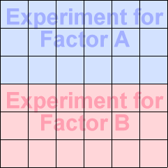
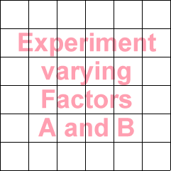

Aim: understand the effect of two or more factors
In the previous chapter, we considered experiments that were designed with a very simple aim — to assess the effect of a single factor on the response.
Many experiments are conducted with broader aims and this chapter examines the design and analysis of experiments that are conducted with the aim of assessing the effects of two or more different factors.
The most important concepts and methods can be explained and illustrated in experiments for two factors, so we will start there.
A poor experimental design
If n experimental units are available for an experiment to assess the effect of two factors, A and B, on a response, the simplest experimental design uses half of the experimental units in a completely randomised experiment to assess the effect of factor A and the other half in a separate experiment about factor B.

Although this design initially seems reasonable, we will show in later pages of this section that:
Completely randomised design for both factors
A better design uses all experimental units in a single completely randomised design in which the levels of A and B are both varied.

Each different combination of a level of A and a level of B is called a treatment. In a completely randomised design, we normally use equal replicates of all possible treatments.
As in completely randomised experiments with a single factor, the different treatments are randomly allocated to the experimental units.
This type of design is called a factorial design for the two factors.
Random allocation of treatments to experimental units is essential.
Randomisation
The diagram below illustrates the random allocation of treatments to experimental units for an experiment in which:
The diagram lists all treatments on the left.
Click Randomise treatments to randomly allocate the treatments to the experimental units on the right.